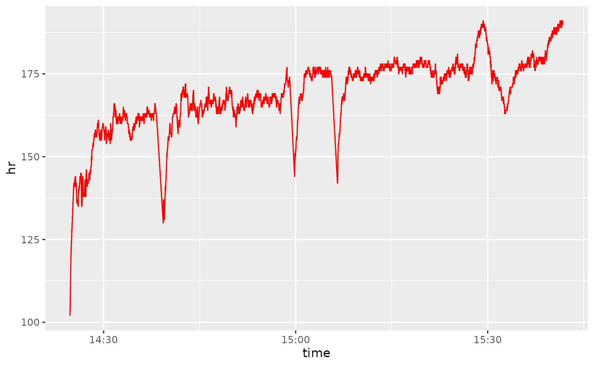
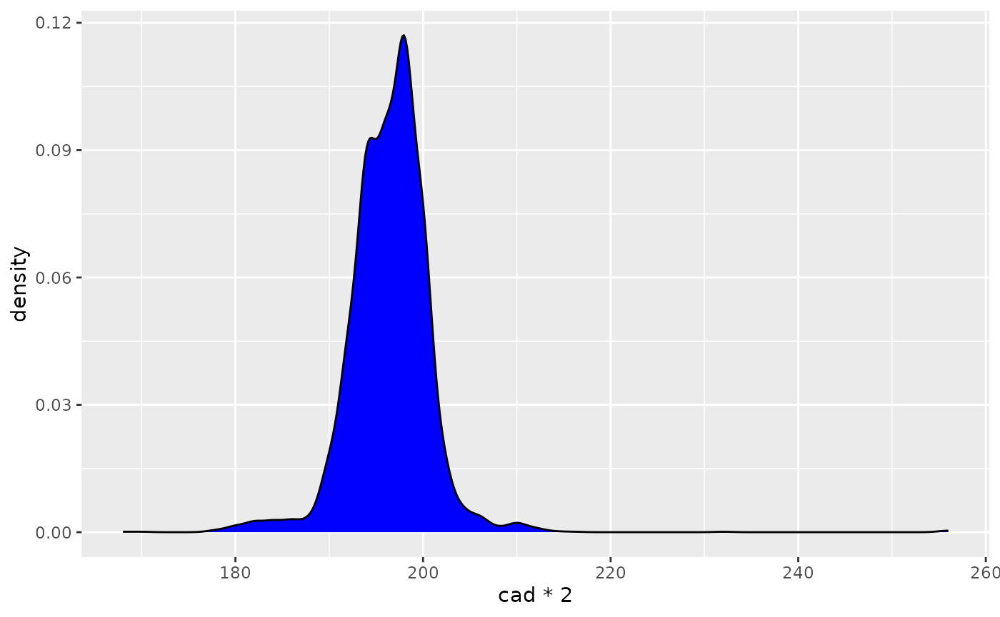

activatr can parse additional information beyond the
basic lat/lon data from GPX/TCX files, as well as sample the files for
quicker manipulation.
All of the advanced functionality is included in the
parse_gpx or parse_tcx function with optional
arguments. As a reminder, this is what the default parsing would look
like and return:
library(activatr)
# Get the running_example.gpx file included with this package.
filename <- system.file(
"extdata",
"running_example.gpx.gz",
package = "activatr"
)
df <- parse_gpx(filename)| lat | lon | ele | time |
|---|---|---|---|
| 37.80405 | -122.4267 | 17.0 | 2018-11-03 14:24:45 |
| 37.80406 | -122.4267 | 16.8 | 2018-11-03 14:24:46 |
| 37.80408 | -122.4266 | 17.0 | 2018-11-03 14:24:48 |
| 37.80409 | -122.4266 | 17.0 | 2018-11-03 14:24:49 |
| 37.80409 | -122.4265 | 17.2 | 2018-11-03 14:24:50 |
Parsing extension data
If your GPX file contains additional extension information,
activatr can parse that as well. In this case,
running_example.gpx contains heart rate, cadence, and
temperature information. We can parse that by setting
detail = "advanced" in parse_gpx:
df_advanced <- parse_gpx(filename, detail = "advanced")| lat | lon | ele | time | hr | cad |
|---|---|---|---|---|---|
| 37.80405 | -122.4267 | 17.0 | 2018-11-03 14:24:45 | 102 | 68 |
| 37.80406 | -122.4267 | 16.8 | 2018-11-03 14:24:46 | 104 | 73 |
| 37.80408 | -122.4266 | 17.0 | 2018-11-03 14:24:48 | 107 | 89 |
| 37.80409 | -122.4266 | 17.0 | 2018-11-03 14:24:49 | 110 | 89 |
| 37.80409 | -122.4265 | 17.2 | 2018-11-03 14:24:50 | 112 | 89 |
Now we can do plots like heart rate over time, or a distribution of cadences:
library(ggplot2)
library(dplyr)
ggplot(df_advanced) +
geom_line(aes(x = time, y = hr), color = "red")
ggplot(filter(df_advanced, cad > 80)) +
geom_density(aes(x = cad * 2), fill = "blue", bw = 1)
Sampling datapoints
If you’re parsing many GPX files or GPX files sampled every second,
you often don’t need a “full resolution” view of the activity. The
every argument to parse_gpx allows you to only
sample some points from the GPX, speeding up the parsing:
# Parsing as normal gets all of the rows, but takes longer
full_time <- system.time({
df_full <- parse_gpx(filename)
})
nrow(df_full)
#> [1] 4433
full_time
#> user system elapsed
#> 0.309 0.000 0.310
# Grabbing every hundredth data point runs much faster
sample_time <- system.time({
df_sample <- parse_gpx(filename, every = 100)
})
nrow(df_sample)
#> [1] 44
sample_time
#> user system elapsed
#> 0.063 0.000 0.064